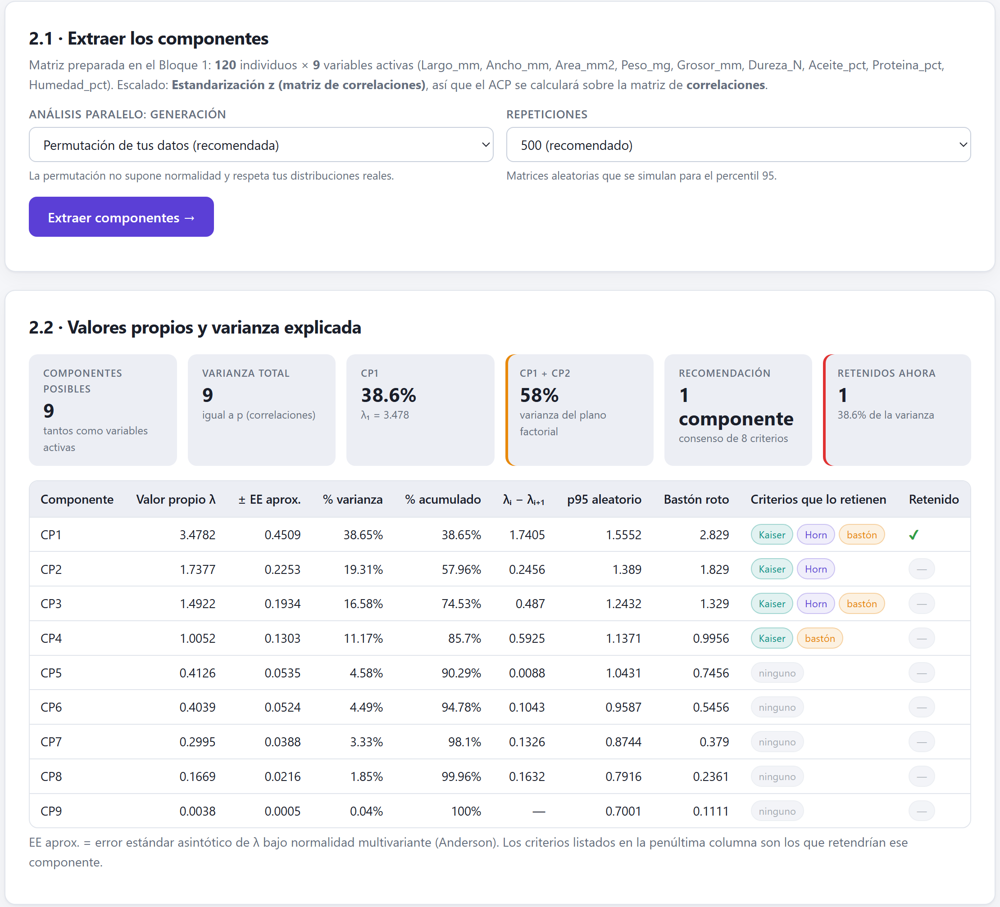
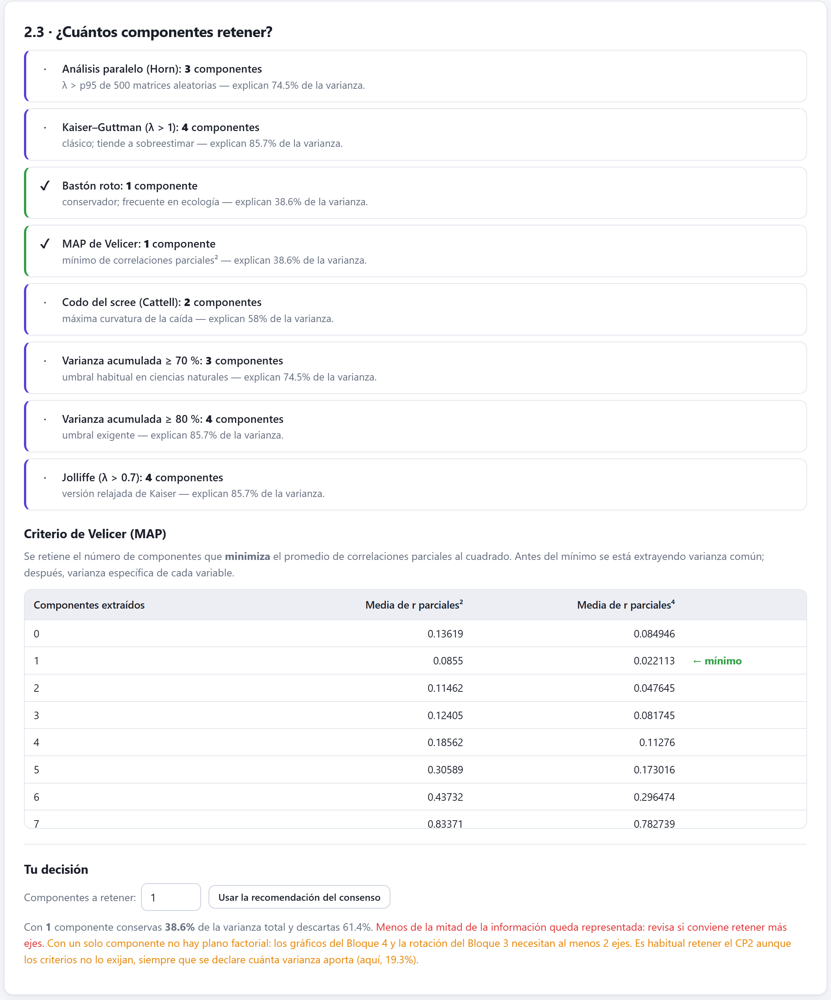
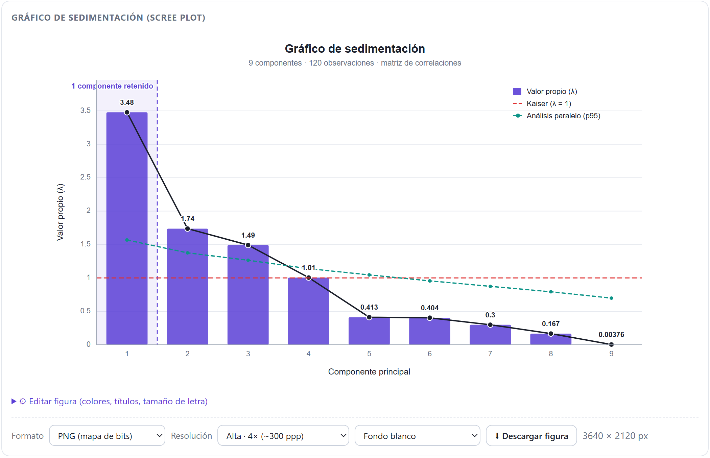
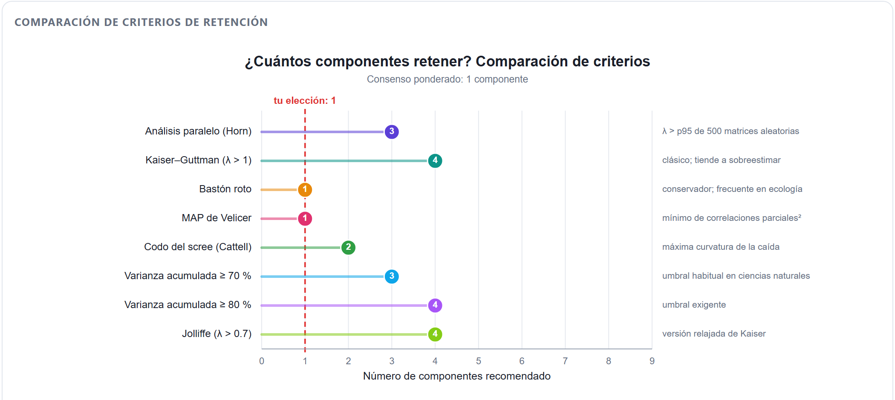
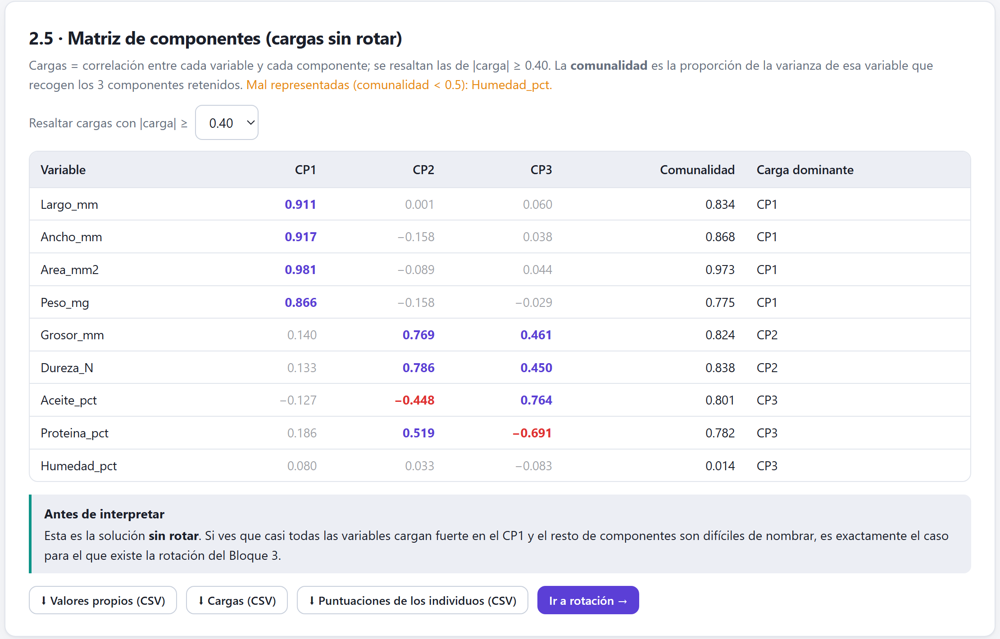
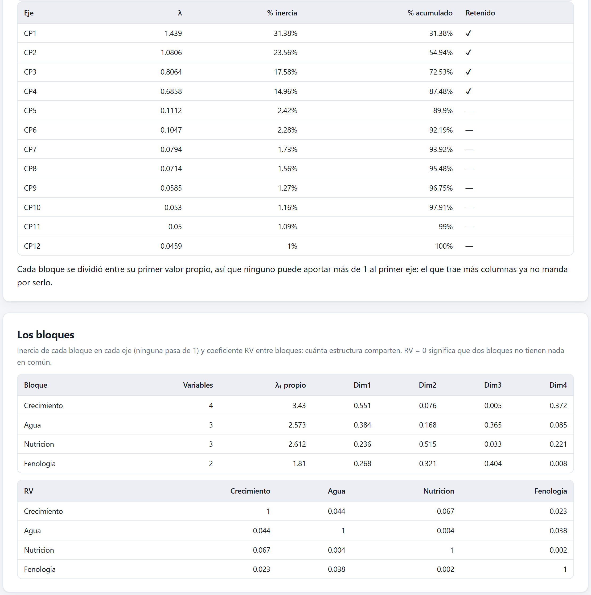

Qué calcula la extracción, cómo leer valores propios, varianza y cargas, y cómo decidir cuántos componentes conservar con ocho criterios que casi nunca coinciden. Termina con lo que el Bloque 2 muestra cuando el método es el AC, el ACM, el AFDM o el AFM, y con dos análisis completos.
El Bloque 2 hace la cuenta central del ACP: descompone la matriz preparada en ejes ordenados de mayor a menor varianza. Todo lo que verás después —rotación, mapas, interpretación— se construye con lo que sale de aquí.
El bloque se abre desde la barra de pasos una vez que preparaste la matriz en el Bloque 1. Tiene una tarjeta de teoría con tres temas y, debajo, la tarjeta 2.1 · Extraer los componentes, que recuerda cuántos individuos y variables entran y sobre qué matriz se calculará: la de correlaciones si estandarizaste, la de covarianzas con cualquier otro escalado.
Sobre la matriz de correlaciones o covarianzas se calcula su descomposición espectral. Salen cuatro objetos:
| Opción | Valores | Consejo |
|---|---|---|
| Análisis paralelo: generación | Permutación de tus datos (recomendada) baraja cada columna por separado; Datos normales aleatorios (Horn clásico) simula datos normales. | La permutación no supone normalidad y sirve también con covarianzas. |
| Repeticiones | 200 (rápido), 500 (recomendado) o 1000. | 500 es un buen equilibrio; con 1000 el percentil 95 varía menos entre corridas. |
| Indicador | Qué dice | Color |
|---|---|---|
| Componentes posibles | Tantos como variables activas. | — |
| Varianza total | Igual a p con correlaciones; en unidades al cuadrado con covarianzas. | — |
| CP1 | Porcentaje de varianza del primer eje y su λ₁. | — |
| CP1 + CP2 | La varianza del plano factorial que dibujará el Bloque 4. | verde ≥ 60 % · ámbar ≥ 45 % · rojo |
| Recomendación | El número de componentes que da el consenso de los ocho criterios (sección 4.3). | — |
| Retenidos ahora | Los que conservas y cuánta varianza suman. Empieza igual a la recomendación. | verde ≥ 70 % · ámbar ≥ 50 % · rojo |

1 2 3 4 5 6 7 8 9practica2_semillas.csv, sus nueve variables activas y estandarización z.| Columna | Contenido |
|---|---|
| Valor propio λ | La varianza del componente. |
| ± EE aprox. | Error estándar asintótico de Anderson, λ·√(2/(n−1)), válido bajo normalidad multivariante. |
| % varianza · % acumulado | λ entre la varianza total, y su suma hasta ese componente. |
| λᵢ − λᵢ₊₁ | La distancia al siguiente valor propio. |
| p95 aleatorio | El valor que el azar produce el 5 % de las veces (análisis paralelo). |
| Bastón roto | La varianza esperada si se repartiera al azar. |
| Criterios que lo retienen | Etiquetas Kaiser (λ > 1, solo con correlaciones), Horn (λ > p95) y bastón (λ > bastón roto), evaluadas en cada fila por separado. |
| Retenido | ✔ en los componentes que conservas. |
Las etiquetas de la tabla comparan cada fila con su referencia; los criterios, en cambio, cuentan componentes seguidos desde el primero y se detienen en el primero que falla. En la figura 4.1, CP4 lleva la etiqueta «bastón» (1.0052 > 0.9956), pero CP2 ya no la tenía (1.7377 < 1.829): el criterio del bastón roto retiene un solo componente. Una etiqueta aislada después de un hueco no cuenta.
Si dos valores propios consecutivos difieren menos que su error estándar, los dos ejes son intercambiables: otra muestra podría girarlos dentro de su plano. Con las semillas, λ₂ − λ₃ = 0.2456 y el EE de λ₂ es 0.2253: CP2 y CP3 están casi empatados. El plano 2–3 es estable, pero la orientación de cada eje no lo es, y leerlos por separado es arriesgado. Es una buena razón para rotar en el Bloque 3.
La tarjeta 2.3 · ¿Cuántos componentes retener? calcula ocho reglas publicadas y muestra, para cada una, cuántos componentes retendría y cuánta varianza sumarían. Ninguna es la correcta por sí sola; cada una tiene un sesgo conocido.
| Criterio | Regla que aplica la app | Sesgo conocido | Peso |
|---|---|---|---|
| Análisis paralelo (Horn) | Componentes seguidos cuyo λ supera el percentil 95 de los λ de 200, 500 o 1000 matrices sin estructura. | El mejor evaluado en simulaciones. | 3 |
| Kaiser–Guttman (λ > 1) | λ > 1. Con covarianzas se convierte en Media de los λ: λ mayor que el promedio. | Sobreestima; retiene ejes aun en datos sin estructura. | 1 |
| Bastón roto | Componentes seguidos cuyo λ supera bk = (varianza total / p) · Σi=k..p 1/i. | Conservador; frecuente en ecología. | 2 |
| MAP de Velicer | El número de componentes que minimiza la media de las correlaciones parciales al cuadrado. Se calcula siempre sobre correlaciones. | Tiende a quedarse corto con pocos datos. | 2 |
| Codo del scree (Cattell) | El componente donde la caída de λ cambia más de pendiente (máxima segunda diferencia), contando ese componente. | Visual por naturaleza; conviene mirarlo. | 1 |
| Varianza acumulada ≥ 70 % | El primer k cuya varianza acumulada llega al 70 %. | Siempre se alcanza añadiendo ejes. | 1 |
| Varianza acumulada ≥ 80 % | Lo mismo con el 80 %. | Umbral exigente. | 1 |
| Jolliffe (λ > 0.7) | λ > 0.7. Con covarianzas repite la regla de la media y la nota dice «no aplica sin estandarizar». | Versión relajada de Kaiser; retiene aún más. | 1 |
Con las semillas los ocho criterios se reparten entre 1 y 4 componentes. No es un error de la app: es lo habitual cuando hay un eje dominante —el tamaño, que suma cuatro variables— y otros ejes más débiles. La tabla del MAP, debajo de la lista, muestra por qué Velicer se queda con uno: la media de las correlaciones parciales al cuadrado baja de 0.136 a 0.0855 al extraer el primero y vuelve a subir con el segundo (0.115).
| Si… | entonces |
|---|---|
| Horn, bastón roto y MAP coinciden | Ese es el número. Los demás criterios solo confirman. |
| Horn da más que el bastón roto y el MAP | Quédate en el rango entre ambos y elige por interpretabilidad (sección 4.3). |
| Solo Kaiser o Jolliffe piden un eje más | No lo añadas por ellos: son los que más sobreestiman. |
| El ACP es sobre covarianzas | Ignora Kaiser y Jolliffe; la regla de la media es su equivalente, pero Horn por permutación sigue siendo válido. |
| Un eje cumple los números pero no se puede nombrar | No lo retengas: el criterio de interpretabilidad manda. |
El análisis paralelo usa números aleatorios: al repetir la extracción el percentil 95 cambia unas centésimas (1.569, 1.578 y 1.555 para CP1 de las semillas en tres corridas). Si un λ queda a menos de 0.02 de su percentil, el voto de Horn puede cambiar entre corridas; súbelo a 1000 repeticiones antes de decidir.

1 2 3 4 5 6
1 2 3 4 5La recomendación es una moda ponderada: cada criterio vota por su número de componentes con el peso de la tabla 4.4 —Horn 3; bastón roto y MAP 2; los demás 1— y gana el número con más votos. Si hay empate, gana el menor.
| k | Criterios que lo proponen | Votos |
|---|---|---|
| 1 | Bastón roto (2) · MAP de Velicer (2) | 4 |
| 2 | Codo del scree (1) | 1 |
| 3 | Análisis paralelo (3) · Varianza acumulada ≥ 70 % (1) | 4 |
| 4 | Kaiser (1) · Varianza acumulada ≥ 80 % (1) · Jolliffe (1) | 3 |
| Empate entre 1 y 3 con 4 votos: la app recomienda 1, el menor. | ||
El campo Componentes a retener: admite cualquier número entre 1 y p. Al cambiarlo se actualizan los indicadores, la tabla de cargas, las cuatro figuras y el texto de debajo; el botón Usar la recomendación del consenso vuelve al número sugerido. Tres avisos pueden aparecer en ese texto:
| Situación | Aviso |
|---|---|
| La varianza conservada es menor que 50 % | En rojo: menos de la mitad de la información queda representada. |
| Más de 95 % con más de dos componentes | En ámbar: probablemente no estés reduciendo dimensiones. |
| Un solo componente | En ámbar: sin plano factorial no hay rotación ni mapas; es habitual retener el CP2 declarando cuánto aporta. |

Cambiar los componentes retenidos borra la rotación y los mapas calculados después: hay que volver a calcular los Bloques 3 y 4 con el nuevo número. Volver a pulsar Extraer componentes → conserva el número que elegiste a mano; volver a preparar la matriz en el Bloque 1, no: la extracción empieza de cero con la recomendación.
La lista de criterios marca con ✔ los que coinciden con el número retenido al extraer. Si después cambias el número a mano, la lista no se redibuja: las marcas siguen en los criterios del número anterior. La figura 4.4 y los indicadores sí se actualizan.
«Se retuvieron tres componentes, que explican el 74.5 % de la varianza, con base en el análisis paralelo de Horn (500 permutaciones, percentil 95) y la interpretabilidad de la solución; el bastón roto y el MAP de Velicer sugerían uno, y el criterio de Kaiser, cuatro.» Nombrar los criterios que discrepan es más honesto que citar solo el que conviene.
La tarjeta 2.4 · Figuras de extracción reúne cuatro figuras editables, y la 2.5 · Matriz de componentes (cargas sin rotar), la tabla de cargas y las descargas del bloque.
La tabla tiene una columna por componente retenido. Las cargas que superan el umbral se resaltan en color —violeta si son positivas, rojo si son negativas— y las demás se atenúan. Carga dominante indica el componente con la carga absoluta mayor. El umbral solo cambia el resaltado, no los cálculos.
| Si tu muestra tiene… | resalta a partir de |
|---|---|
| n ≥ 300 | 0.30 a 0.40 |
| 100 ≤ n < 300 | 0.40 (el valor por defecto) |
| n < 100 | 0.55, como pide la recomendación de tamaño del Bloque 1 |
| Quieres solo lo muy claro para un resumen | 0.70: la variable comparte con el eje la mitad de su varianza |
Una carga de 0.40 equivale a un 16 % de varianza compartida con el componente; una de 0.70, a un 49 %.
| Botón | Columnas |
|---|---|
| ⬇ Valores propios (CSV) | Componente, valor propio, EE, % de varianza, % acumulado, diferencia, p95 aleatorio, bastón roto y si se retuvo. |
| ⬇ Cargas (CSV) | Las cargas de todos los componentes, no solo los retenidos, y la comunalidad con los retenidos. |
| ⬇ Puntuaciones de los individuos (CSV) | El identificador, las cualitativas y las puntuaciones en todos los componentes. |
Las puntuaciones descargadas son las proyecciones de la matriz preparada sobre los vectores propios: su varianza en cada componente es λk, no 1. Si vas a usarlas en otro análisis que las necesite en unidades estándar, divide cada columna entre su desviación estándar.
El botón Ir a rotación → lleva al Bloque 3, que ya quedó activo al extraer.

1 2 3 4 5 6| Figura | Qué muestra | Opciones propias |
|---|---|---|
| Gráfico de sedimentación | Los λ en barras y línea, la franja de los retenidos, Kaiser y el percentil 95 de Horn. | Eje Y en λ o en % de varianza; mostrar el bastón roto; barras multicolor. |
| Análisis paralelo de Horn | Los λ observados frente a la media y el percentil 95 aleatorios. | Banda media–p95 y línea de la media. |
| Varianza acumulada | La curva acumulada con un umbral y tu elección marcada. | Umbral en % (80 por defecto), área bajo la curva. |
| Comparación de criterios | Un punto por criterio en el número que propone (figura 4.4). | Notas, un solo color, marca de tu elección. |
Si en la tarjeta 1.9 elegiste otro método, la tarjeta 2.1 no cambia de aspecto, pero su botón dice Ejecutar AFM → (o la sigla que corresponda) y los resultados son otros. En estos métodos no se habla de varianza sino de inercia: la dispersión de la nube medida con la métrica propia de cada método.
| Método | Qué entra | Inercia total |
|---|---|---|
| AC | La tabla de contingencia de las dos cualitativas elegidas. | φ² = χ²/n: cuánto se aparta la tabla de la independencia. |
| ACM | La tabla disyuntiva de las cualitativas marcadas. | J/Q − 1 (J categorías, Q variables), un valor artificial. |
| AFDM | Cuantitativas estandarizadas y categorías divididas entre √pk. | Cuantitativas + (categorías − cualitativas). |
| AFM | Los bloques de cuantitativas estandarizadas, cada uno dividido entre su primer valor propio. | La suma de las inercias ponderadas; ningún bloque aporta más de 1 al primer eje. |
Estos dos métodos toman las cuantitativas después del tratamiento de faltantes pero antes de la transformación y el escalado, y las estandarizan por su cuenta, porque su equilibrio entre tipos o bloques lo exige. Elegir Pareto o una transformación logarítmica en la tarjeta 1.3 no cambia sus resultados. Si necesitas una variable transformada, transfórmala en la hoja antes de cargarla.
| Tarjeta | Contenido |
|---|---|
| 2.2 · Inercia y ejes | Individuos o filas, columnas, ejes posibles, inercia total, ejes retenidos; en el AC, además, la χ² de independencia. Tabla de λ con % de inercia y acumulado, y una nota sobre cómo leer la inercia de ese método. |
| Tarjeta propia del método | AC: las doce celdas que más aportan a la χ², con observado, esperado y residuo. ACM: la v de Cramér entre cada par de variables. AFDM: r² de cada cuantitativa y η² de cada cualitativa con cada eje. AFM: la inercia de cada bloque en cada eje y el coeficiente RV entre bloques. |
| 2.3 · ¿Cuántos ejes retener? | Cuatro criterios (tabla 4.11), el consenso y el número de ejes. |
| 2.4 · Figuras de extracción | El gráfico de sedimentación. |
| 2.5 · Coordenadas | Coordenadas de las columnas, categorías o variables en los primeros cuatro ejes, su cos² en el plano 1–2 y su contribución al eje 1. |
| Criterio | Regla | Peso |
|---|---|---|
| Ejes por encima de la inercia media (AC, AFDM, AFM) | λ mayor que la inercia total entre el número de ejes. | 2 |
| Ejes por encima de 1/Q (Benzécri) (ACM) | λ > 1/Q: solo esos ejes tienen contenido. | 3 |
| Inercia acumulada ≥ 70 % y ≥ 80 % | En el ACM, con la inercia ajustada de Greenacre. | 1 y 1 |
| Codo del scree | Igual que en el ACP; solo con tres ejes o más. | 1 |
| Método | Qué vigilar | Ejemplo |
|---|---|---|
| AC | La χ² de independencia antes que los porcentajes: con una tabla independiente el primer eje puede recoger casi toda una inercia minúscula. | Tratamiento × Bloque del proyecto integrador: χ² = 0.78, gl 6, p = 0.99, inercia total 0.0054, y aun así Dim1 = 93.4 %. No hay mapa que leer: es un diseño balanceado. |
| ACM | Los porcentajes crudos subestiman; lee la columna % ajustado (Greenacre), que solo existe para los ejes con λ > 1/Q. | Las mismas dos variables: Dim1 = 21.4 % crudo y 93.45 % ajustado, igual que el AC. La v de Cramér de 0.052 avisa que no hay asociación. |
| AFDM | Que la inercia total coincida con cuantitativas + (categorías − cualitativas); r² y η² se comparan en la misma escala. | Iris con Species activa: inercia 6 (4 + 3 − 1); Species tiene η² = 0.964 en el eje 1 y 0.746 en el 2. Dos ejes, 86.9 %, y los cuatro criterios coinciden. |
| AFM | Los RV entre bloques y que cada bloque tenga al menos dos variables. | Figura 4.6. |

1 2 3 4proyecto_integrador_agronomia.csv: 144 parcelas completas y cuatro bloques declarados a mano —crecimiento (4 variables), agua (3), nutrición (3) y fenología (2)—, con el rendimiento como suplementaria. 1 La nota sobre la ponderación. 2 El primer valor propio de cada bloque analizado por separado. 3 La inercia del crecimiento en el eje 1: 0.551, nunca más de 1. 4 El RV entre bloques: todos por debajo de 0.07.La lectura de la figura 4.6 es instructiva: los RV cercanos a 0 dicen que los cuatro bloques casi no comparten estructura, y por eso ningún eje domina —el primero recoge solo 31.4 % de la inercia— y hacen falta cuatro ejes para llegar al 87.5 %. Los criterios discrepan (media 4, acumulada 70 % 3, acumulada 80 % 4, codo 5) y el consenso queda en cuatro.
Con un método distinto del ACP el Bloque 2 no ofrece descargas, y el botón Ir a rotación → no aparece: al Bloque 4 se pasa con el botón 4 de la barra de pasos, que queda activo al ejecutar el método (el 3 se apaga, porque la rotación es del ACP). Tres detalles de la versión 1.1: los indicadores de la tarjeta 2.2 se apilan en una columna en lugar de formar una fila; la tarjeta 2.4 solo muestra el gráfico de sedimentación, que no mueve la franja de retenidos si cambias el número de ejes; y la tabla de λ llama a los ejes CP1, CP2… en el AFDM y el AFM, mientras la de coordenadas los llama Dim1, Dim2…
Dos análisis completos del Bloque 2. En el primero los criterios casi coinciden y la decisión es sobre el plano; en el segundo se reparten y hay que decidir con la interpretación. Las cifras son las de la app; los percentiles de Horn varían ligeramente entre corridas.
iris.csv · 150 flores, cuatro medidas, estandarización zLectura. Iris tiene una dimensión dominante —el tamaño de la flor, con cargas de 0.89 a 0.99 en tres medidas— y una segunda que es una sola variable. Retener dos es la práctica habitual: se declara que CP2 aporta 22.85 % y que lo define Sepal.Width. CP3 y CP4 juntos no llegan al 4.2 %.
practica2_semillas.csv · 120 semillas, nueve variables, estandarización zLectura. Aquí el consenso no ayuda: empata y resuelve hacia el número más pequeño, que deja fuera dos tercios de la información. La decisión la toman Horn —el criterio más fiable— y la interpretación: tres componentes con nombre claro. Kaiser pedía un cuarto eje con λ = 1.0052, que no supera el percentil 95 (1.14) y no se puede nombrar. Compara con el capítulo 3: el retiro de variables por MSA llevaba a otra solución, de un solo componente de tamaño, con seis o cuatro variables. Las dos son válidas, pero responden preguntas distintas.
Con el número de componentes decidido, el siguiente capítulo entra al Bloque 3: rotar la solución para que cada eje sea más fácil de nombrar.